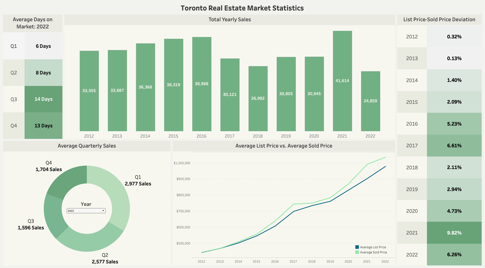
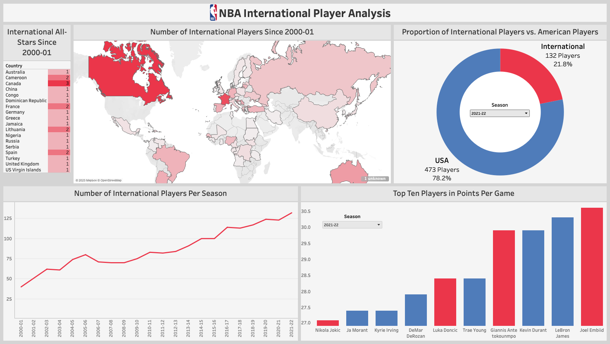

May 2023
This project aims to reveal insights regarding Toronto's real estate market.
With Python, I scraped data from the web and converted it into dataframes for EDA with SQL
in order to build a Tableau dashboard displaying insights with various visualizations.


In this project, I developed a logistic regression model with Python to investigate the probability of driver fatality resulting from automobile collision.
With Python, I utilized Yahoo Finance API to extract and transform real-time stock data to conduct technical analysis of FAANG stocks and generate visualizations to evaluate stock performance.
The purpose of this project is to investigate speeding-related collisions in Toronto. I utilized SQL and Excel to clean, aggregate, and perform EDA on Toronto traffic collision data and built a Tableau dashboard to display insights.

In this project, I investigate the emergence of international players in the NBA's current era vs. previous seasons. I implemented web scraping with R to extract NBA data for analysis with SQL and data visualization with Tableau.